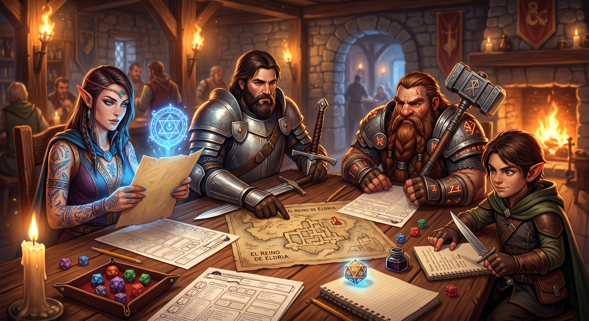

100% Online
Accedé a tus personajes desde cualquier dispositivo, sin perder nada.
Crea, edita y lleva tus datos de personaje y notas a todas tus campañas. Rápido, simple y siempre disponible.
Empezar ahora
Accedé a tus personajes desde cualquier dispositivo, sin perder nada.
Modificá estadísticas, habilidades y equipo con una interfaz clara y simple.
Una experiencia visual fiel al estilo clásico de las hojas de personaje.
Tu progreso se guarda en tiempo real. Nunca más perder una ficha.